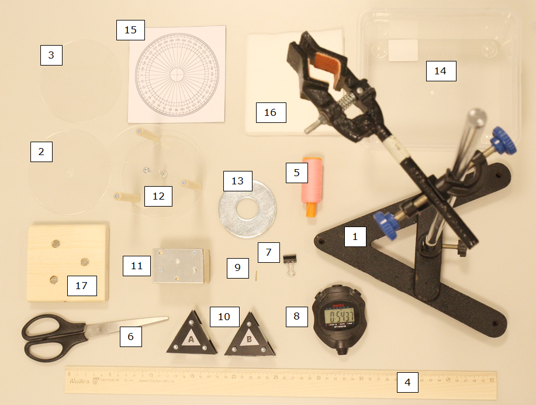
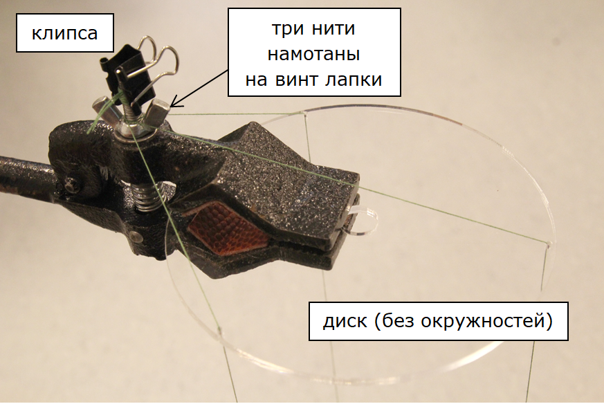
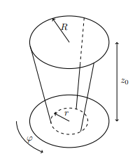
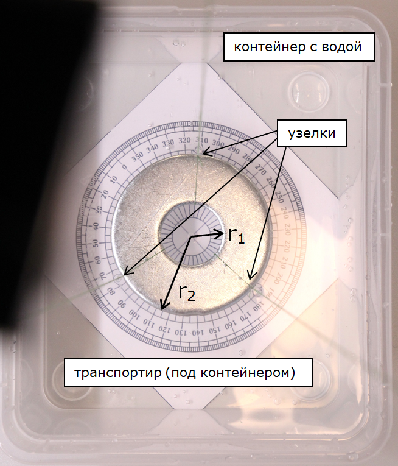
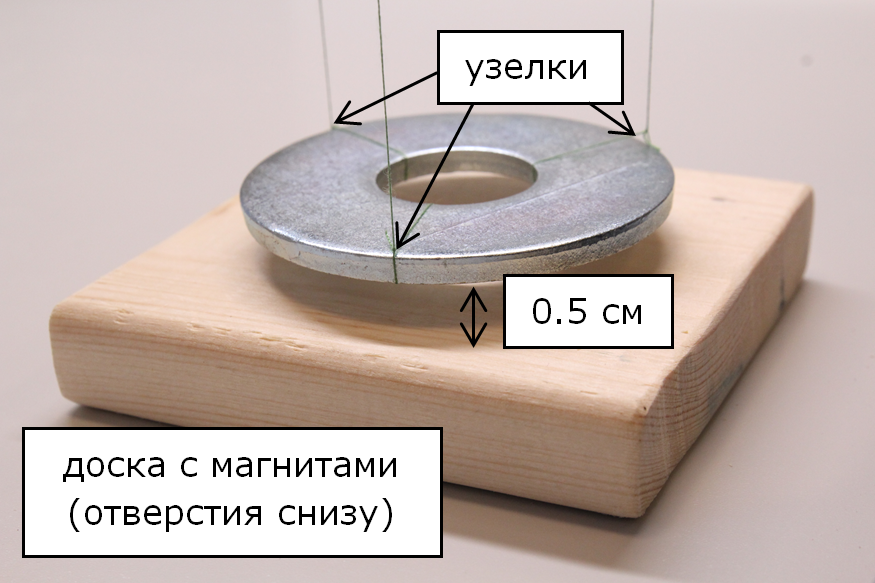

X22 (2022) — English translation
A trifilar suspension (see figure below) is used to study torsional vibrations. The introductory parts of this experimental problem are devoted to assembling a torsion pendulum and carrying out simple measurements with it; it will also be necessary to theoretically obtain an expression for the period of oscillation. The assembled setup will then be used to study the structure of more complex objects. In the part devoted to the ellipsoid of inertia, the vibrations of the block will be studied at its different orientations in space. The last two parts of the experiment will allow us to evaluate the influence of viscous friction or magnetic interaction on the damping of oscillations.

1. tripod with coupling and foot 2. upper disk (thicker) 3. lower disk (thinner and with circles, its weight is indicated everywhere $m_0$) 4. ruler $50~\text{cm}$ 5. thread 6. scissors 7. office clip 8. stopwatch 9. nail for securing the loops under the lower disk 10. nuts in clamps A and B 11. block with plates 12. clamp for orienting the rotating body in space 13. washer (in parts F and G its mass can be considered known and equal to $m_\text{ш} = 80~\text{г}$) 14. container, water on demand (for part F) 15. cardboard protractor 16. paper napkins to keep the workplace clean 17. board with magnets
An error estimate is not required for any part of this work! There are small parts in the equipment, do not lose them. Be careful with plexiglass products. Broken or cracked items will not be replaced! It is prohibited to open the black triangular clamps with nuts!
There are small parts in the equipment, do not lose them.
Be careful with plexiglass products. Broken or cracked items will not be replaced!
It is prohibited to open the black triangular clamps with nuts!
Assemble the installation. Three threads should pass through the holes in the upper (thick) disk, clamped horizontally in the tripod foot. At their lower ends you need to tie loops that will be threaded into the holes in the lower (thin, with circles drawn) disk. Insert a nail into the center of the lower disk, onto which you can attach loops for fixation. Once, by pulling the threads up one at a time, you can achieve the horizontal position of the lower disk, wind three threads around the foot screw and secure them with a clip.

Let the upper and lower ends of the trifilar suspension threads be fixed at distances $R$ and $r$ from the axis, respectively. With the remaining installation parameters unchanged, the period of torsional oscillations of such a pendulum depends on $R$ and $r$ as follows: $T=C \cdot R^\alpha r^\beta$.
$\textit{Примечание.}$ It is convenient to change $r$ in the following way. The loops at the lower ends of the disk are removed from the nail, taken out of the “old” holes and passed through the “new” ones, after which they are fixed back onto the nail. Since the length of the suspension changes, it is necessary to loosen the clip and adjust the winding of the three upper ends of the threads.
The period $T$ also depends on other installation parameters. Let's proceed to the theoretical derivation of the general formula. Let $z_0$ be the distance between the planes of the disks in the equilibrium position. Let's say that a certain load placed on it rotates together with the lower disk, and $m$ is their total mass, and $I$ is their total moment of inertia. The length $L$ of each thread, if necessary, can be expressed through the listed quantities. Let the lower disk rotate through a small angle $\varphi$ from the equilibrium position and at the same time rise $h$ vertically.

You are given two different nuts in triangular clamps A and B. The total masses of the nuts in the clamps are $m_A$ and $m_B$. Each nut contains an empty cylindrical cavity (the axis of the cylinder coincides with the axis of the nut). Assume that all the faces of the nut are flat (ignore roundings), and the surface of the internal cylindrical cavity is smooth (ignore threads). Your goal is to determine the radii $a$ and $b$ of the cylindrical cavities in nuts A and B, respectively. To measure the oscillation period, place the nut on the lower disk of the assembled trifilar suspension (the plane of the triangular bases must be parallel to the plane of the disk).
$\textit{Внимание!}$ In this part, as well as in part D, for ease of use of the installation, you should take $r$ as much as possible.
There are 2 steel plates attached to two sides of the wooden block. The mass of the block is $M_\text{бр}$, the mass of each of the four plates is $M_\text{пл}$. The mass and moment of inertia of the fastening screws should be neglected. $\textit{Внимание!}$ In this part, as in part C, for ease of use of the installation, you should take $r$ as much as possible.
$\textit{Внимание!}$ In this part, as in part C, for ease of use of the installation, you should take $r$ as much as possible.
Do this in two ways:
a) neglecting the mass and moment of inertia of the disk and taking into account only the block with plates;
b) given the disk.
Compare the results of these calculations. Is the loss of accuracy significant when neglecting the disk?
Instead of the bottom disk, hang a bar clamp on a trifilar hanger. It consists of two disks (each mass $m_0$) and three wooden spacers (each mass $m_\text{р}$). The mass and moment of inertia of the fastening screws and clamping screws should be neglected.
$\textit{Внимание!}$ In the remainder of this section, neglect the mass and moment of inertia of the clamp. The block has holes marked into which the clamping screws can be placed. By fixing the block in different spatial orientations, it is possible to take measurements and calculate the moments of inertia of the block $I$ relative to many different axes passing through its center. In the photograph above, three planes are marked with the letters $\alpha$, $\beta$, $\gamma$, cutting the block and passing through its center.
The block has holes marked into which the clamping screws can be placed. By fixing the block in different spatial orientations, it is possible to take measurements and calculate the moments of inertia of the block $I$ relative to many different axes passing through its center. In the photograph above, three planes are marked with the letters $\alpha$, $\beta$, $\gamma$, cutting the block and passing through its center.
Hypothetically, the value $\cfrac{1}{\sqrt{I/m}}$ (more precisely, they usually simply use $1/\sqrt{I}$) can be calculated and plotted on a 3-dimensional diagram for absolutely any direction of the axis passing through the center of the block. All “outer” ends of the segments will form the surface of some spatial figure. The beautiful theoretical fact is that this surface is an ellipsoid. If the original figure has axes of symmetry, then they will be the main axes of the ellipsoid. For example, in the case of our block with plates, all three axes passing through the centers of the faces and partially measured at point D1 are the main axes of the ellipsoid.
If the original figure has axes of symmetry, then they will be the main axes of the ellipsoid. For example, in the case of our block with plates, all three axes passing through the centers of the faces and partially measured at point D1 are the main axes of the ellipsoid.
Hang the washer from the upper disk on three threads, as shown in the figure, and immerse it in water to about half the depth of the water. Make sure that the plane of the washer is strictly horizontal. In this part of the problem, it is important that the oscillations have a small amplitude, i.e. so that the disk turns no more than $\pi/2$ in each direction. (Otherwise, in addition to the horizontal forces of viscous friction, it will be necessary to take into account the vertical forces of raising and mixing water). Place the protractor on the table under the container and center the system.

$\textit{Примечание.}$ The logarithmic damping decrement is the logarithm of the ratio of the amplitudes of successive oscillations: $d=\text{ln}\cfrac{\varphi_i}{\varphi_{i+1}}$.
Place the washer on the trifilar suspension assembled in the previous part above the center of the board with magnets. There should be an air gap of thickness $0.5~\text{cm}$ between the washer and the board. Make sure that the plane of the washer is strictly horizontal. In this part of the problem, it is important that the oscillations have a small amplitude, i.e. so that the disk turns no more than $\pi/4$ in each direction. (Otherwise, the oscillations will cease to be harmonic due to the strong inhomogeneity of the magnetic field along the vertical axis). Place the protractor on the surface of the board with magnets and center the system.

Source: https://pho.rs/p/508